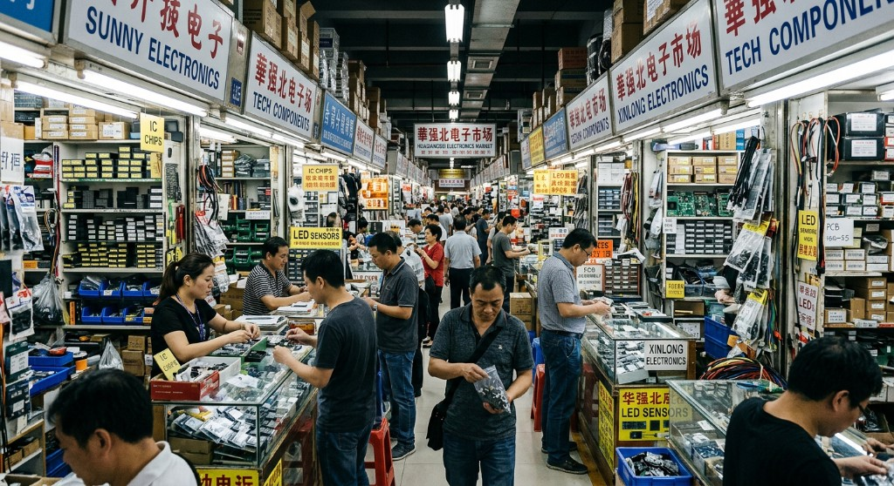
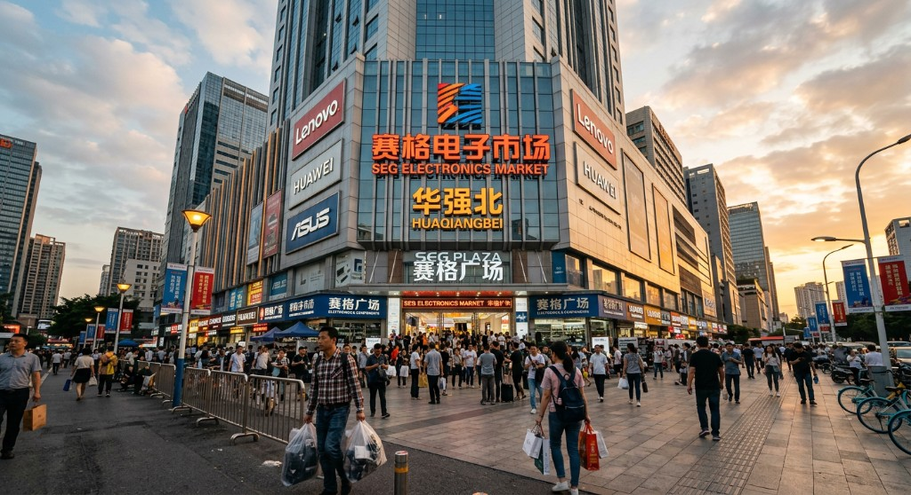
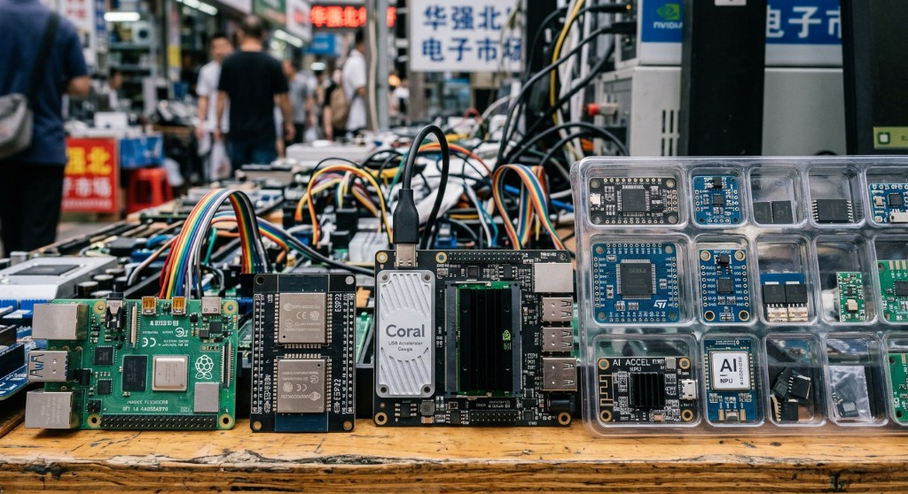

01Executive Summary
Huaqiangbei (华强北) is a one-square-kilometer district in central Shenzhen widely regarded as the world's largest electronics market and the beating heart of China's consumer electronics and AI hardware supply chain.
For decades, Huaqiangbei has served as the global sourcing hub for makers, startups, research labs, and Fortune 500 product teams. What began in the 1980s as a gathering of state-owned electronics factories has evolved into a vertically integrated ecosystem covering every node of the hardware stack — from raw silicon and passive components to finished AI edge devices, robots, drones, and wearables.
This proposal outlines a one to two-day guided visit designed for senior international delegates to understand first-hand how Shenzhen's AI hardware ecosystem is restructuring the global innovation map.
02Why Huaqiangbei Matters

A Living Supply-Chain Atlas
Unlike a trade show or industrial park, Huaqiangbei is an operating marketplace. Every aisle is a working node of the global electronics supply chain, with live inventory, real-time pricing, and direct connections to factories in Bao'an, Longhua, and Dongguan — the Greater Bay Area's manufacturing belt.
The AI Hardware Frontier
In the last three years, Huaqiangbei has rapidly adapted to the AI era. Vendors that once sold smartphone parts now stock:
- Edge AI accelerator modules (Rockchip RK3588, Hailo, Kendryte, Sophon)
- NVIDIA Jetson-class carrier boards and knockoff-compatible alternatives
- LiDAR sensors, depth cameras, and robotic arms for humanoid and service robotics
- Large language model reference kits and AI-enabled IoT development platforms
- Custom PCBA services capable of small-batch production in under one week
03Key Stops in Detail
SEG Electronics Market
The 72-story SEG Plaza is the most iconic landmark of Huaqiangbei. Its lower floors host one of the oldest and densest electronics trading halls in China, with thousands of booths selling everything from resistors to AI vision modules. The upper floors contain offices for chipset distributors, solution houses, and design services.
Visitors will receive a guided walkthrough of representative booths, with category-specific experts explaining pricing, provenance, and typical buyers.

Huaqiang Electronics World
A multi-level trading center specializing in passives, connectors, and embedded modules. A must-see for engineers assessing sourcing options.
Saige Electronics Plaza
The go-to destination for development boards, AI accelerator modules, and smart-hardware reference kits — often the first stop for overseas hardware startups.
Mingtong Digital City
Specializes in smartphones, wearables, and refurbishment supply chains. Excellent window into the circular economy of electronics.
Yuanwang Digital Mall
A younger, consumer-facing market with finished AI products — smart speakers, AR glasses, robot pets, and AI toys built on Huaqiangbei parts.
04What to See: The AI Hardware Layer

Our guides will focus the tour around five product categories that represent the current frontier of AI hardware:
| Category | Example Products | Typical End-Use |
|---|---|---|
| Edge AI SoCs | Rockchip RK3588, Allwinner V853, Sophon BM1684 | Smart cameras, edge servers |
| AI Dev Boards | Jetson Orin Nano variants, LicheePi, Orange Pi AI | Robotics, prototyping |
| Sensors & Vision | ToF cameras, LiDAR, stereo modules | Autonomous systems, humanoids |
| AI Audio | Voice front-end ICs, microphone arrays | Smart speakers, AI toys |
| Finished AI Devices | AI pet robots, AR glasses, LLM-powered toys | Consumer market |
07Expected Outcomes for Delegates
- A first-hand, ground-truth understanding of why Shenzhen remains the world's most competitive hardware ecosystem.
- Direct exposure to the AI hardware stack — from chipsets to finished products — compressed into a single geographic walking tour.
- A practical sourcing playbook: how overseas teams engage with Huaqiangbei vendors today.
- A visual and narrative reference deck (delivered post-visit) for internal sharing within each delegate's organization.